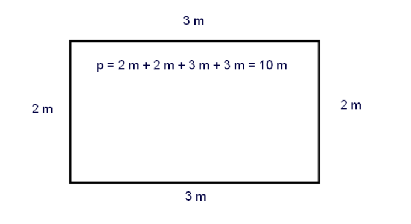
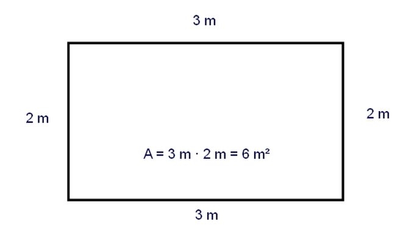

Piiriä merkitään pienellä p-kirjaimella ja pinta-alaa isolla A-kirjaimella.
p = piiri
A = ala (pinta-ala)
Selitys: piiri Piiri tarkoittaa reunan pituutta, kuvion reunaviivan mittaa. Suorakulmion piiri tulee, kun lasketaan sivut yhteen: < br/> piiri on sivujen pituuksien summa.
For example if the base of the rectangle is three metres and the height of the rectangle is two metres then the rectangle has two sides of length 2 m and two sides of length 3 m and the sum becomes ten metres.
Selitys: pinta-ala
Pinta-ala tarkoittaa kuvion kokoa: paljonko mahtuu reunan sisään. Suorakulmion pinta-ala on kanta kertaa korkeus. Esimerkiksi jos kanta on kolme metriä ja korkeus kaksi metriä, pinta-alaksi tulee kuusi neliömetriä.

Harjoitus: piiri ja pinta-ala:
Piirrä kaksi suorakulmiota. Draw two rectangles in your notebook (squared paper): one has a base of four little squares and a height of two little squares. The other rectangle is a square itself with a side of three little squares. Calculate the perimeters and the areas of both big rectangles. You will find out that the perimeters are the same but the areas are not the same.